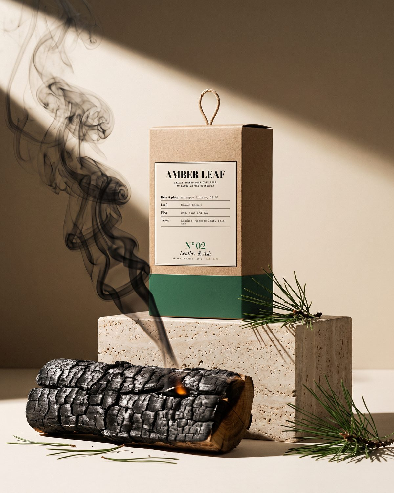
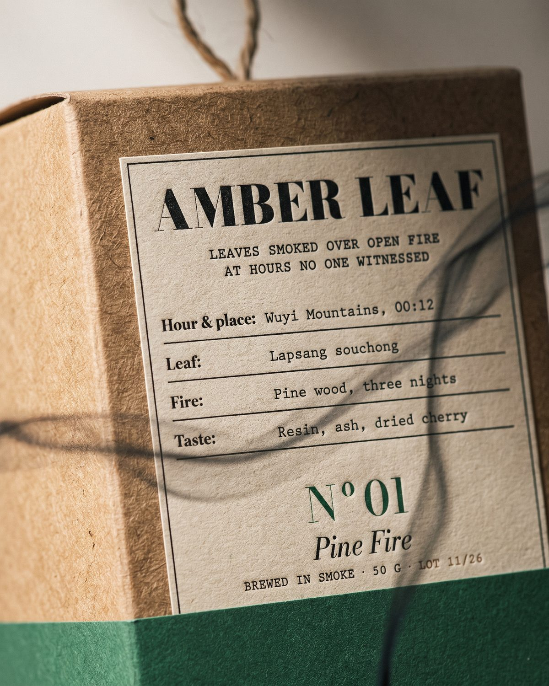
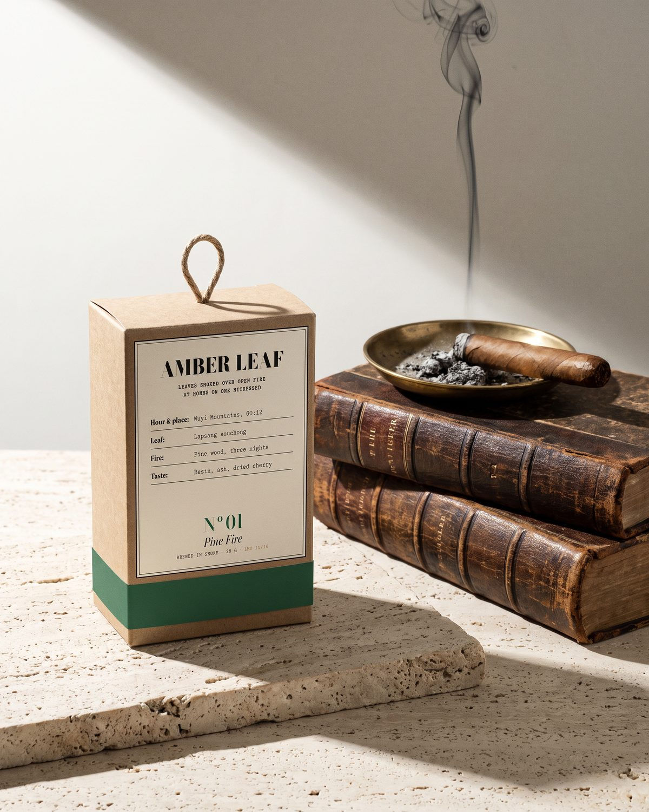
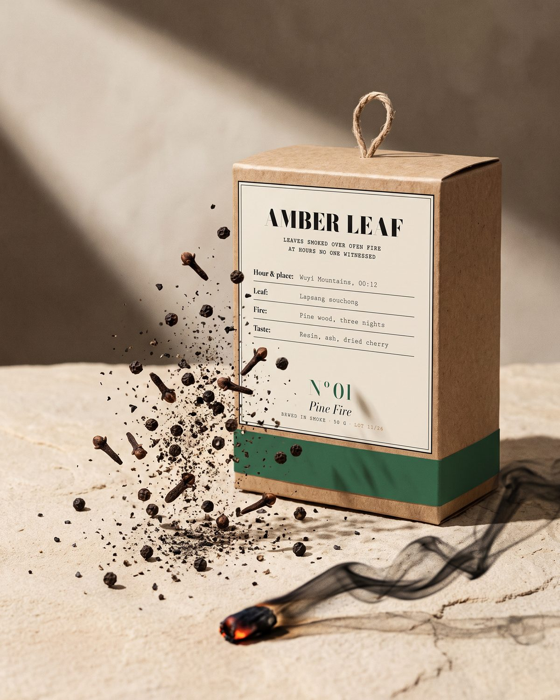
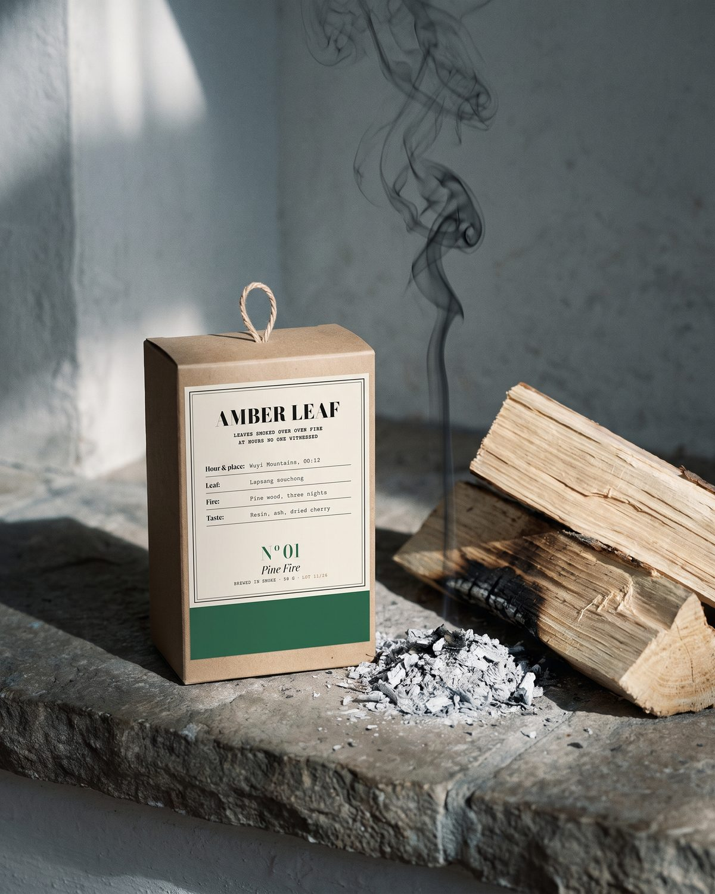
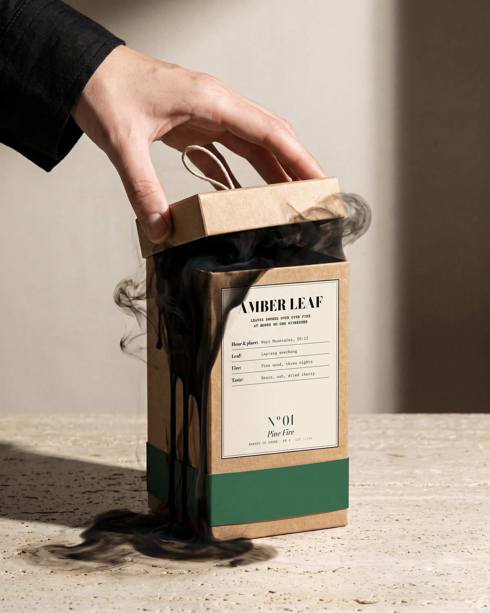

00:12
Nº01 Pine Fire
Wuyi Mountains, 00:12.
Lapsang souchong, drie nachten boven dennenhout. Hars, as, gedroogde kers. Het hardste vuur. Het begin.
Smoke archive · Lot 11/26
Thee die drie nachten boven open vuur werd gerookt. Op uren dat niemand keek.
Open het archiefNiet voor iedereen.

01 · Het vuur
Ergens in de bergen brandt een vuur van dennenhout. Niet om te koken. Niet om warm te blijven.
Boven dat vuur hangen de bladeren. Drie nachten lang trekt de rook erdoor, tot ze donker en stil zijn.
Wat overblijft, sluiten we op. Een doos, een label, een nummer. Een plaats en een uur, zodat je weet welke nacht je drinkt.
02 · Vier uren
Vier vuren. Elk brandde op een ander uur, in een andere nacht. Welk uur is het jouwe?

00:12
Wuyi Mountains, 00:12.
Lapsang souchong, drie nachten boven dennenhout. Hars, as, gedroogde kers. Het hardste vuur. Het begin.

02:40
An empty library, 02:40.
Gerookte Keemun boven eikenhout. Leder, tabaksblad, koude as. Iemand doofde net een sigaar. Hij is weg.

04:05
Edge of the desert, 04:05.
Gerookte zwarte thee met peper en kruidnagel, boven acaciasintels. Zwarte peper, gloed, donkere honing. De woestijn slaapt niet.

06:30
The morning after, 06:30.
Geroosterde oolong en ceder, boven een vuur dat al bijna uit was. Ceder, geroosterd graan, een laatste spoor van rook. De zachtste van de vier.
03 · Ritueel
Geen melk. Geen suiker. Geen excuses.
04 · Smoke archive
Lot 11/26 is beperkt. Wie het archief opent, hoort als eerste van ons: het verhaal van het vuur, één nacht per keer, en welk uur op jou wacht.
